Making Data Tell its Story
First, some fun!

First, some fun!
First, some fun!
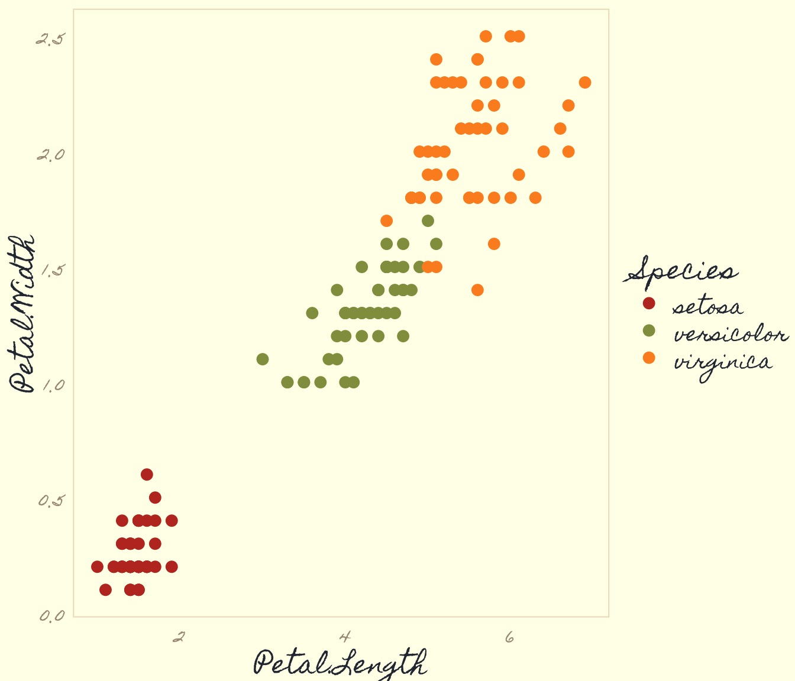
First, some fun!
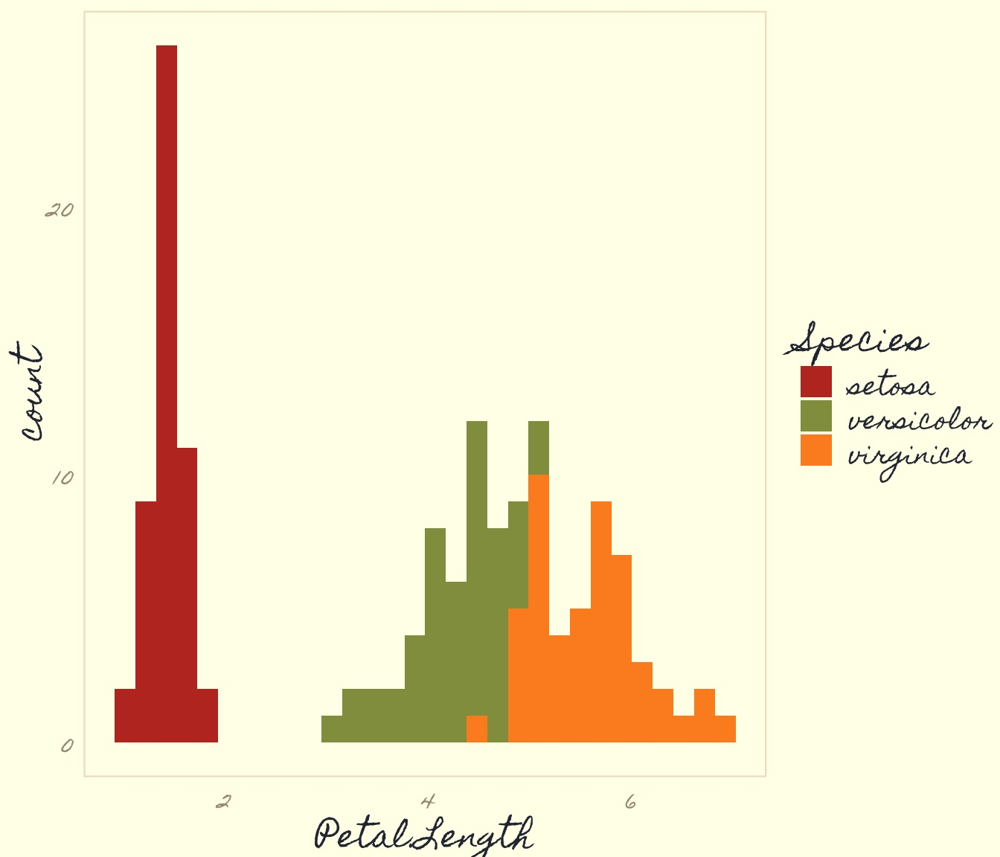
Where are we going?

Objectives
Think about how sampling influences data structure
Consider how we summarize our data
A little bit o’ Boolean
The split-apply-combine philosophy
How much does one salmon weigh?

Weight: 3.09kg
How much do these salmon weigh?

3.09, 2.91, 3.06, 2.69, 2.88, 2.98, 1.61, 2.16, 1.56, 1.76
What can we say about the weights of all of these salmon?

Pair up with someone and come up all of the information you can think of that would summarize this population.
Population versus Sample
|
|
What is a population?
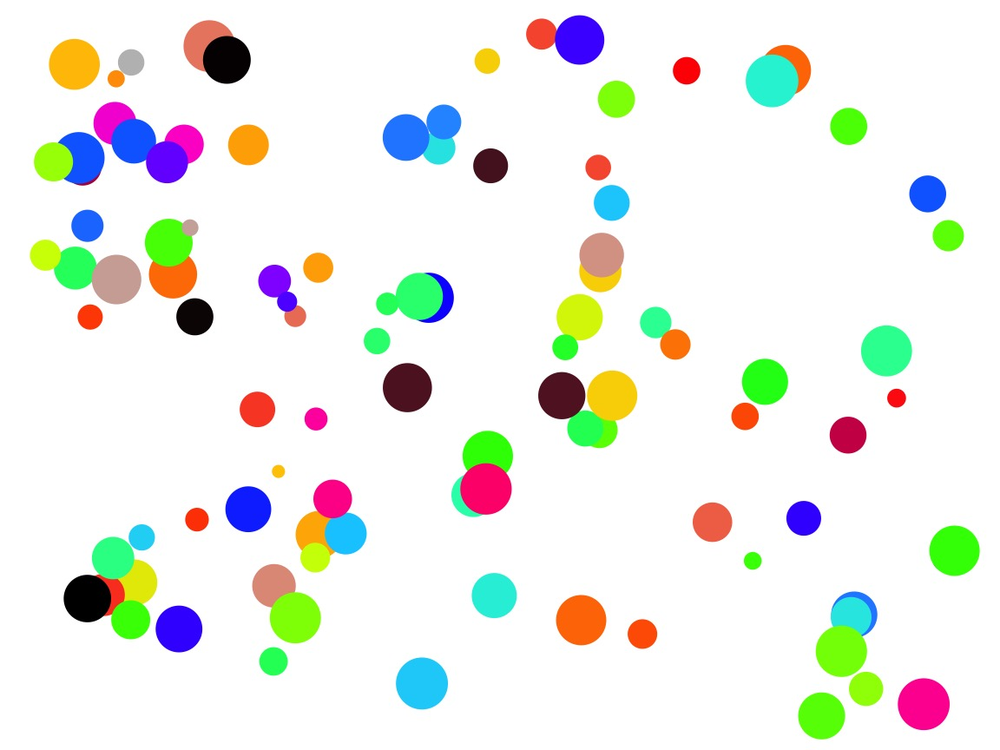Population = All Individuals
What is a sample?
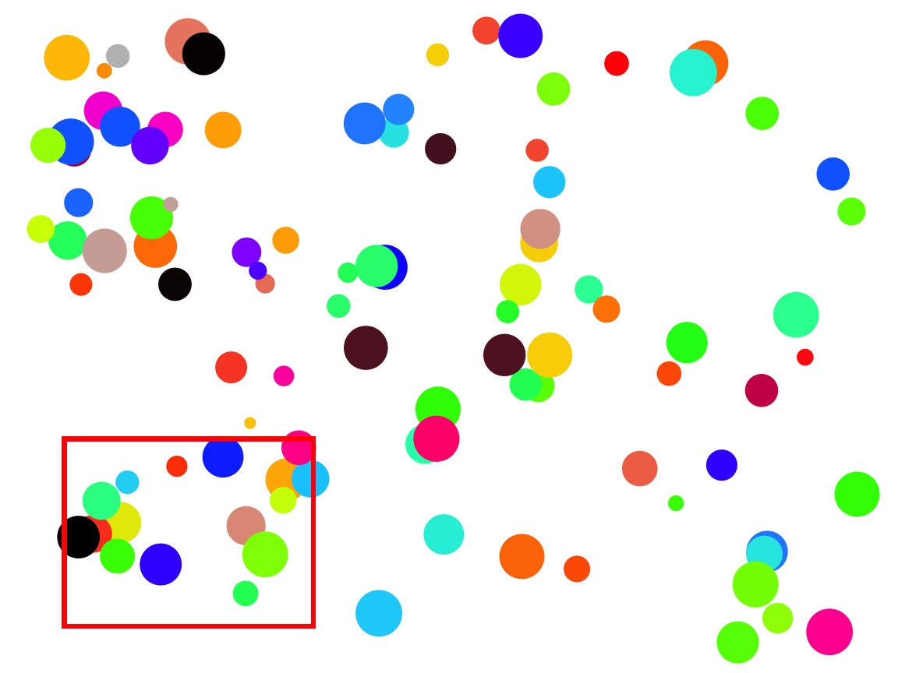What are the properties of a good sample?
- Sample is representative
- Replicates have an equal chance of being sampled
- Replicates are independent
Bias from Unequal Representation
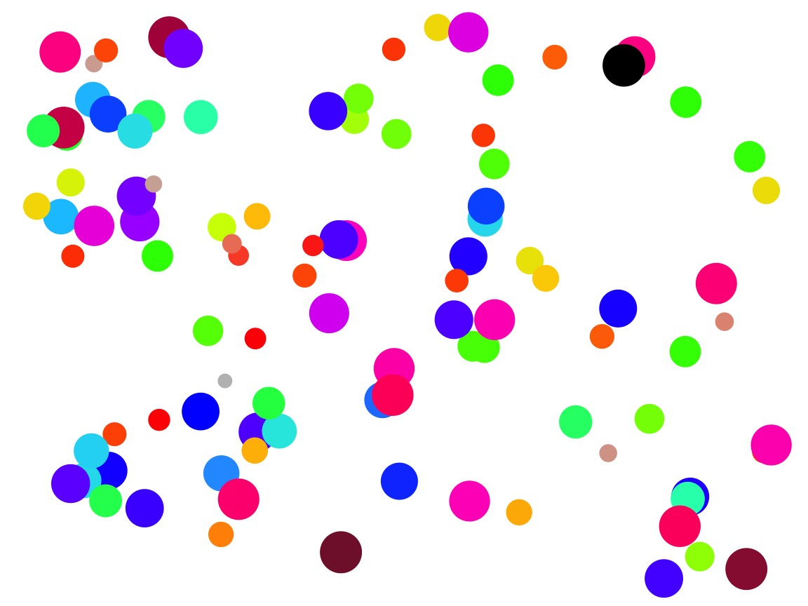 If you only chose one color, you would only get one range of sizes.
Bias from Unequal Change of Sampling
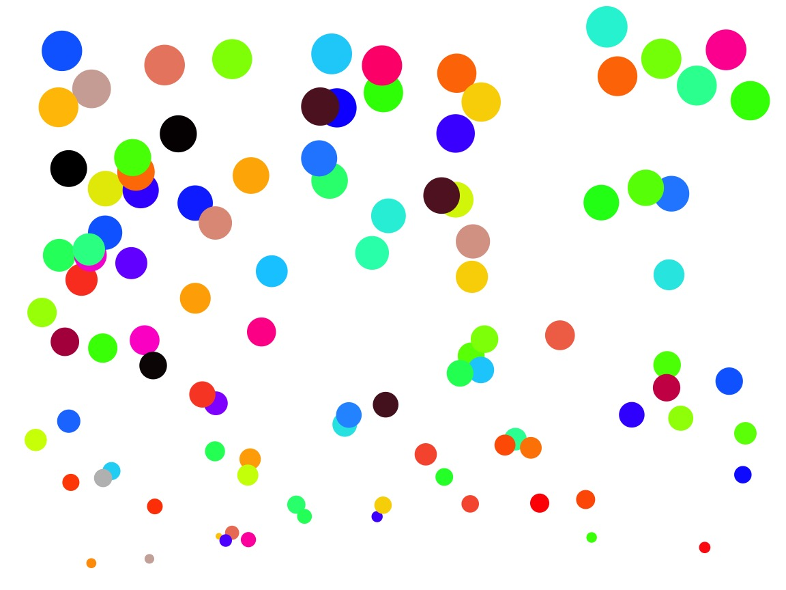 Spatial gradient in size
Bias from Unequal Change of Sampling
Oh, I’ll just grab those individuals closest to me…
Good Sampling Schemes: Stratified Sampling
Sample over a known gradient, aka cluster sampling
Can incorporate multiple gradients
Good Sampling Schemes: Random Sampling
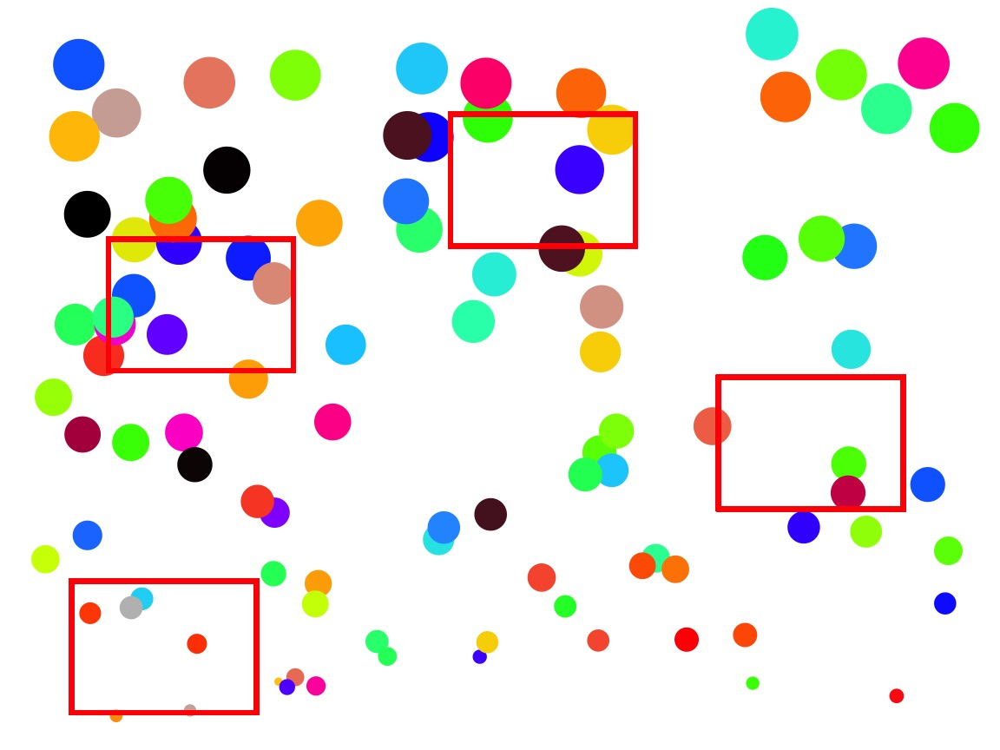- Random - samples chosen using random numbers
- Haphazard - samples chosen without any system (careful!)
Stratified or Random?
How is your population defined?
What is the scale of your inference?
What might influence the inclusion of a replicate?
How important are external factors you know about?
How important are external factors you cannot assess?
Different Sampling for Different Populations
 |
|
Consider each scenario and in pairs design a sampling schema:
1. Population = All salmon across all rivers
2. Population = Salmon in one river
Objectives
Think about how sampling influences data structure
Consider how we summarize our data
A little bit o’ Boolean
The split-apply-combine philosophy
Our Data
Sample versus Population Summarization
We assume a sample is representative of a population
Therefore, sample statistics are estimates of population statistics
Larger Samples = Better Estimators
Accuracy versus Precision

{kind=link}
Central Tendancy: Mean
\(\large \bar{Y}\) - The average value of a sample
\(y_{i}\) - The value of a measurement for a single individual
n - The number of individuals in a sample
\(\mu\) - The average value of a population
(Greek = population, Latin = Sample)
Median - Dead Center
[1] 1.56 1.61 1.76 2.16 2.69 2.88 2.91 2.98 3.06 3.09good for non-normal data
[1] 1.855Central Tendancies
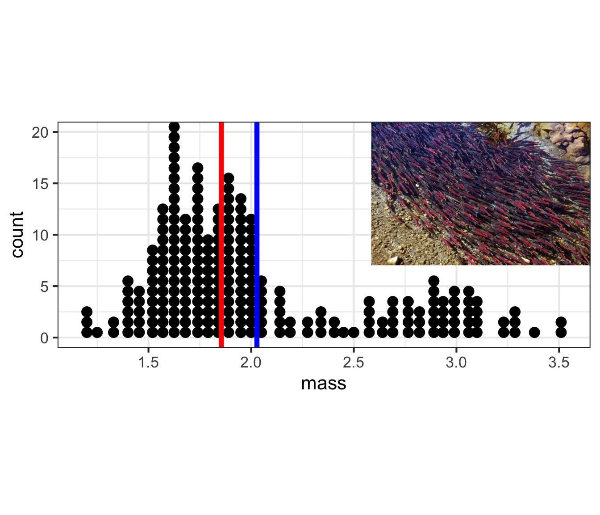
mean, median
What about population-level variability?
What about population-level variability?
What is the range of 2/3 of the population?
Sample Properties: Variance
How variable was that population? \[\large s^2= \frac{\displaystyle \sum_{i=1}^{n}{(Y_i - \bar{Y})^2}} {n-1}\]
- Sums of Squares over n-1
- n-1 corrects for both sample size and sample bias
- \(\sigma^2\) if describing the population
- Units in square of measurement…
Sample Properties: Standard Deviation
\[ \large s = \sqrt{s^2}\]
- Units the same as the measurement
- If distribution is normal, 67% of data within 1 SD
- 95% within 2 SD
- \(\sigma\) if describing the population
What about population-level variability?

Variability: Quantiles and Quartiles
[1] 1.56 1.61 1.76 2.16 2.69 2.88 2.91 2.98 3.06 3.09Quantiles:
5% 10% 50% 90% 95%
1.4270 1.5300 1.8550 2.9430 3.0865 Quartiles (quarter-quantiles):
0% 25% 50% 75% 100%
1.1800 1.6400 1.8550 2.2675 3.5300 Boxplots

Boxplot of One Population

Boxplot of Many Populations
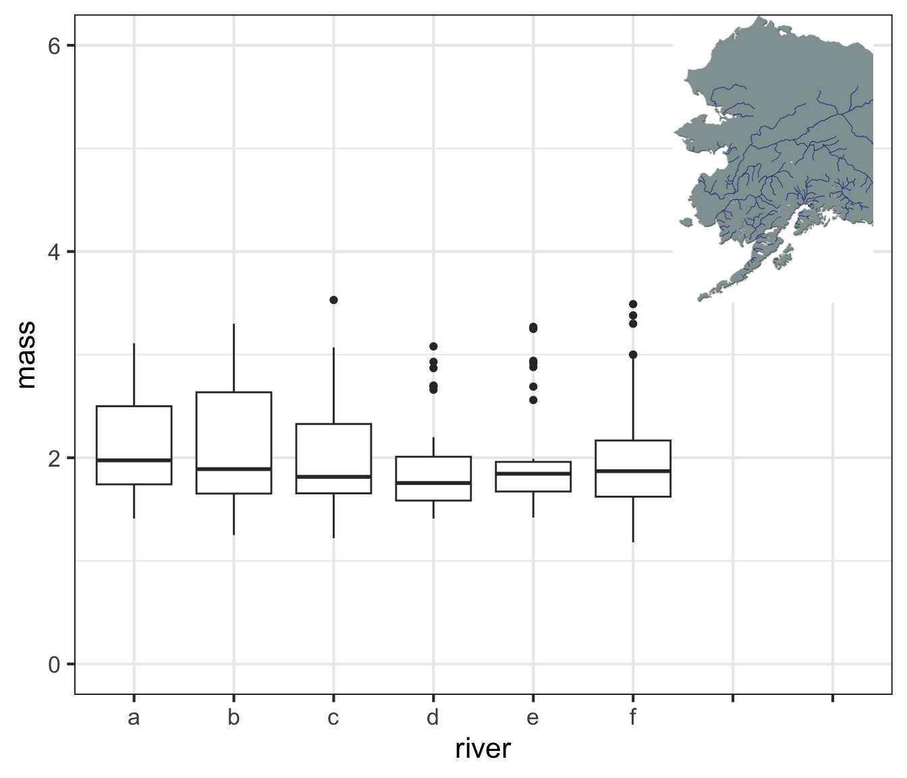
Meh, I still like ridgelines
Objectives
Think about how sampling influences data structure
Consider how we summarize our data
A little bit o’ Boolean
The split-apply-combine philosophy
What do we want to see?
# A tibble: 228 x 3
mass river mass_class
<dbl> <chr> <fct>
1 3.09 a (2.75,3.14]
2 2.91 b (2.75,3.14]
3 3.06 c (2.75,3.14]
4 2.69 d (2.35,2.75]
5 2.88 e (2.75,3.14]
6 2.98 f (2.75,3.14]
7 1.61 a (1.57,1.96]
8 2.16 b (1.96,2.35]
9 1.56 c [1.18,1.57]
10 1.76 d (1.57,1.96]
# ... with 218 more rowsOur Hero…

Filtering
# A tibble: 74 x 3
mass river mass_class
<dbl> <chr> <fct>
1 3.09 a (2.75,3.14]
2 2.91 b (2.75,3.14]
3 3.06 c (2.75,3.14]
4 2.69 d (2.35,2.75]
5 2.88 e (2.75,3.14]
6 2.98 f (2.75,3.14]
7 2.16 b (1.96,2.35]
8 3.30 f (3.14,3.53]
9 3.25 e (3.14,3.53]
10 2.18 f (1.96,2.35]
# ... with 64 more rowsFiltering
# A tibble: 38 x 3
mass river mass_class
<dbl> <chr> <fct>
1 3.09 a (2.75,3.14]
2 1.61 a (1.57,1.96]
3 1.91 a (1.57,1.96]
4 2.13 a (1.96,2.35]
5 1.53 a [1.18,1.57]
6 1.75 a (1.57,1.96]
7 1.76 a (1.57,1.96]
8 1.72 a (1.57,1.96]
9 2.29 a (1.96,2.35]
10 1.74 a (1.57,1.96]
# ... with 28 more rowsLogical Operators

Many Filters
# A tibble: 4 x 3
mass river mass_class
<dbl> <chr> <fct>
1 3.09 a (2.75,3.14]
2 3.04 a (2.75,3.14]
3 3.11 a (2.75,3.14]
4 3.05 a (2.75,3.14]Many Filters
# A tibble: 1 x 1
n
<int>
1 4# A tibble: 1 x 1
n
<int>
1 4Objectives
Think about how sampling influences data structure
Consider how we summarize our data
A little bit o’ Boolean
The split-apply-combine philosophy
Where are we going?
Split-Apply-Combine
Filtering and working with one chunk of the data is not enough
We often want to summarize information about many groups
Split-Apply-Combine

Think-Pair-Share
What are things you want to know about different rivers in the salmon data?
What are things you want to know about different size classes in the salmon data?
Grouping by River
What can we do with this?
# A tibble: 6 x 3
river mean_mass sd_mass
<chr> <dbl> <dbl>
1 d 1.89 0.450
2 e 1.98 0.491
3 c 2.04 0.548
4 f 2.04 0.612
5 b 2.10 0.608
6 a 2.11 0.511What can we do with this?
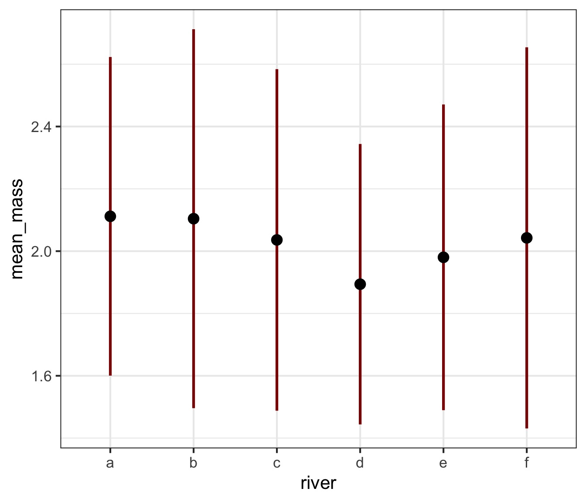
Custom Counts
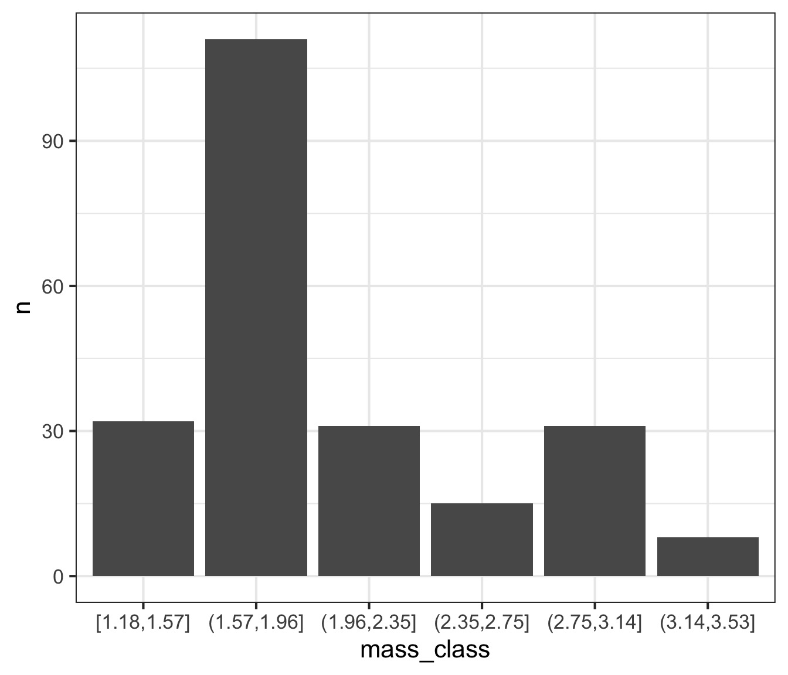